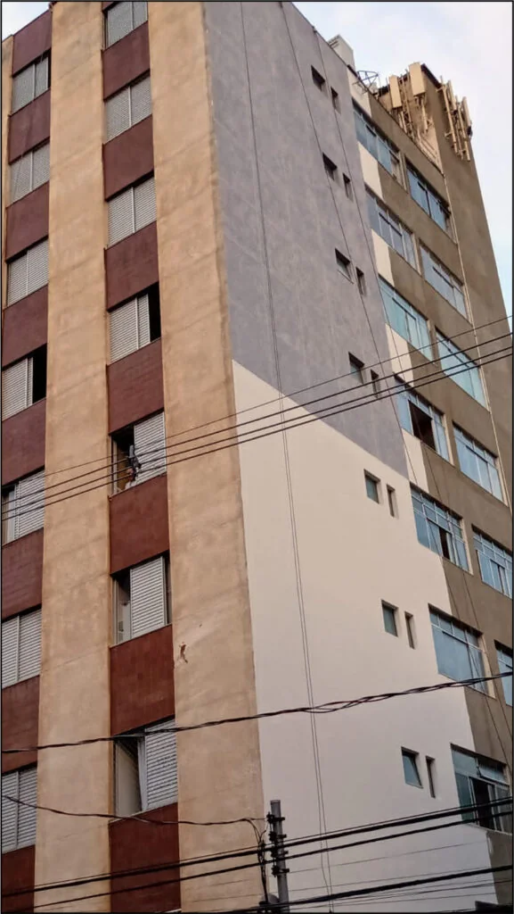
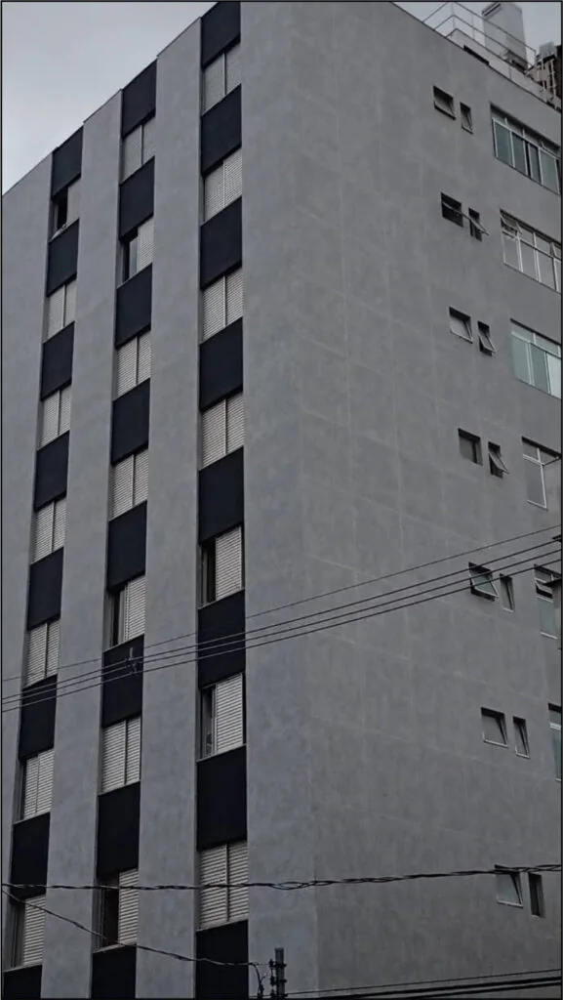

Avaliação da fachada
A vistoria verifica o estado da superfície antes da definição do serviço.
Aplicação de Ecogranito em fachadas
A Vertical Chão avalia a fachada e prepara a superfície. Depois, aplica o Ecogranito em condomínios e edifícios. A equipe trabalha em altura e acompanha a obra da vistoria à inspeção final.
Atendimento comercial (31) 99684-8477A vistoria verifica o estado da superfície antes da definição do serviço.
Limpeza e correções entram no escopo de acordo com o que a vistoria encontrar.
A execução considera o acesso à fachada e as medidas de segurança da obra.
O condomínio recebe orientação sobre as etapas e o andamento do serviço.
Acabamento e conservação
O Ecogranito dá à fachada um acabamento de aparência mineral. A variedade visual, a resistência e o custo-benefício orientam a escolha do produto.
Antes da aplicação, a equipe precisa entender as condições da parede. Fissuras, partes soltas, umidade e desníveis podem exigir correção. O preparo melhora a base e reduz surpresas durante a obra.
Cada edifício pede uma vistoria própria. Por isso, o orçamento parte das medidas, do acesso e do estado real da fachada.
Solicitar uma vistoriaComo trabalhamos
A equipe observa a superfície, o acesso e as áreas de intervenção. Também registra as condições que afetam o trabalho.
O levantamento orienta materiais, preparo, proteções e sequência de trabalho. O condomínio sabe o que entra no orçamento.
A equipe corrige a base conforme o previsto. Depois, aplica o produto escolhido de acordo com as condições da obra.
A equipe confere o acabamento e apresenta o serviço executado ao responsável pelo edifício.
Aplicação em fachada
As imagens pertencem à página original da Vertical Chão e mostram aplicações do material em fachadas.


Quem já contratou a Vertical Chão
Estes depoimentos vieram da página original. Os relatos tratam de serviços prediais e da condução das obras pela empresa.
“Tenho a testemunhar que a equipe deles é completa, com todo equipamento de segurança, com conhecimento total de obra e acabamento em estruturas horizontal e principalmente vertical, sem falar das condições comerciais que nos facilita até na compra de materiais com melhores preços.”
“A empresa Vertical Chão Alpinismo é a melhor de todas que já trabalhou em meu condomínio. Eles trabalham com segurança, com todas as proteções, e fazem um serviço de ótima qualidade. Não me dão problema. Quem for fazer obra ou manutenção do condomínio pode contratar porque vale muito a pena.”
“Em 2021 conheci a empresa Vertical Chão Alpinismo. Me encantei com o profissionalismo dos gestores e, após 11 orçamentos, optamos por executar o serviço com a Vertical Chão Alpinismo. A empresa executou o serviço com perfeição e não gerou nenhum transtorno com a execução da obra, pois diariamente entregava a obra limpa e organizada. A obra foi entregue dentro do prazo e impecável, como foi combinado. Recomendo o serviço da empresa, 100% confiante de que vocês sempre fazem o melhor.”
Orçamento de aplicação de Ecogranito
Informe o tipo de edifício, a área aproximada e o estado atual da fachada. O formulário monta uma mensagem para o WhatsApp do atendimento comercial.